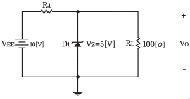
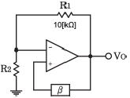
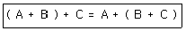
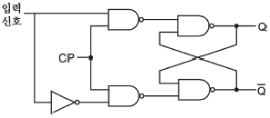
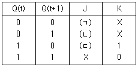
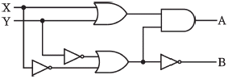
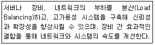
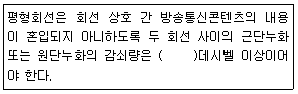
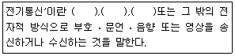

정보통신산업기사 (2018-03-04 기출문제)
1과목: 디지털전자회로
1. 다음 중 직류 전원회로를 구성하는 회로가 아닌 것은?
- 정류회로
- 변조회로
- 평활회로
- 정전압회로
(정답률: 72%)

2. 다음 그림에서 제너다이오드에 흐르는 전류가 25[mA]가 되도록 정전압회로를 설계하려면 저항 R1값은 약 얼마인가?

- 0.7[Ω]
- 1.2[Ω]
- 16.5[Ω]
- 66.7[Ω]
(정답률: 58%)
3. 베이스(B)를 기준으로 PNP 트랜지스터가 활성영역에서 동작하기 위한 바이어스로 알맞은 것은? (단, E : 이미터, C : 컬렉터 이다.)
- E 는 +, C 는 -
- E 는 -, C 는 +
- E 는 +, C 는 +
- E 는 -, C 는 -
(정답률: 75%)
4. 다음 중 부궤환 증폭기의 특징이 아닌 것은?
- 부하변동에 의한 이득변동이 감소한다.
- 일그러짐과 잡음이 증가한다.
- 주파수 특성이 좋다.
- 증폭도가 감소한다.
(정답률: 68%)
5. 전압증폭기의 전압이득이 1,000±100일 때, 이 전압 이득의 변화를 0.1[%]로 하기 위한 부궤환 증폭기의 궤환량 β는 얼마인가?
- 9
- 0.9
- 0.09
- 0.099
(정답률: 62%)
6. 다음 중 FET(Field Effect Transistor)에 대한 설명으로 틀린 것은?
- 입력 임피던스가 크다.
- 다수캐리어에 의해서만 동작한다.
- 게이트 전류에 의해서 드레인 전류가 제어된다.
- 트랜지스터보다 이득-대역폭적이 작다.
(정답률: 55%)
7. 다음 그림은 윈브리지 발진기의 블록도이다. 발진하기 위한 저항 R2의 값은? (단, 발진을 위한 개방루프 이득은 3이다.)

- 5[kΩ]
- 10[kΩ]
- 20[kΩ]
- 30[kΩ]
(정답률: 61%)
8. 다음 중 슈미트 트리거(Schmitt Trigger) 회로의 응용 분야가 아닌 것은?
- 전압비교기 회로
- 구형파 발생 회로
- D/A(Digital to Analog) 변환 회로
- 리미터 회로
(정답률: 70%)
9. 다음 중 대역폭의 효율성과 복조의 용이성을 얻기 위해 진폭편이 변조방식과 위상편이 변조방식을 결합한 방식은?
- FSK(Frequency Shift Krying) 방식
- QPSK(Quadrature Phase Shift Keying) 방식
- QAM(Quadrature Amplitude Modulation) 방식
- ASK(Amplitude Shift Keying) 방식
(정답률: 81%)
10. 다음 중 변조의 목적이 아닌 것은?
- 안테나의 길이를 줄일 수 있다.
- 잡음 및 간섭의 영향을 적게 받는다.
- 주파수 분할의 다중통신을 할 수 있다.
- 송신 전력을 일정하게 유지할 수 있다.
(정답률: 64%)
11. 주파수 20[kHz]의 정현파로 30[MHz]의 반송 주파수를 변조할 때, 최대 주파수 편이가 80[kHz]일 때 FM파의 주파수 대역폭은 얼마인가?
- 180[kHz]
- 190[kHz]
- 200[kHz]
- 300[kHz]
(정답률: 63%)
12. 다음 중 PCM(펄스부호변조)에 대한 설명으로 틀린 것은?
- S/N비가 좋고 원거리통신에 유용하다.
- 신호파를 표본화시킨다.
- 연속적인 시간파 진폭을 가진 아날로그 데이터를 디지털 신호로 변환하는 것이다.
- 표본화된 신호를 부호화한 다음에 양자화 한다.
(정답률: 73%)
13. 다음 중 멀티바이브레이터에 대한 설명으로 잘못된 것은?
- 정궤환이 이루어지는 회로이다.
- 출력 파형은 고차의 고조파를 포함한다.
- 시정수는 입력 파형의 주기를 결정한다.
- 스위치 회로의 구형파 발생, 계수회로로 사용된다.
(정답률: 45%)
14. 다음 중 위상 고정 루프(PLL : Phase Locked Loop)를 구성하는 내부회로가 아닌 것은?
- 전압 제어 발진기
- 주파수체배기
- 위상 비교기
- 저역 통과 필터
(정답률: 57%)
15. 다음 볼 대수의 정리와 관련 있는 것은?

- 교환 법칙
- 결합 법칙
- 분배 법칙
- 부정 법칙
(정답률: 70%)
16. 다음 논리회로도가 나타내는 플립플롭회로는 무엇인가?

- T 플립플롭
- D 플립플롭
- J-K 플립플롭
- S-R 플립플롭
(정답률: 75%)
17. 2진 4단 리플 카운터는 몇 개의 펄스를 계수할 수 있는가?
- 4개
- 8개
- 16개
- 32개
(정답률: 78%)
18. 다음 중 BCD 부호를 10진수로, 2진수를 8진수나 16진수로 변환하기 위해 사용되는 회로는?
- 디코더
- 인코더
- 멀티플렉서
- 디멀티플렉서
(정답률: 73%)
19. 다음 J-K 플립플롭의 여기표(Excition Table)에서 각각의 괄호 안에 맞는 답은? (단, X는 Don't care를 의미하며, J-K플립플롭의 이전 값은 초기화된 것으로 가정한다.)

- (ㄱ)=1, (ㄴ)=X, (ㄷ)=0
- (ㄱ)=0, (ㄴ)=X, (ㄷ)=1
- (ㄱ)=0, (ㄴ)=1, (ㄷ)=X
- (ㄱ)=1, (ㄴ)=0, (ㄷ)=X
(정답률: 74%)
20. 다음 그림과 같은 논리회로는 어떤 기능을 수행하는가?

- 일치회로
- 반가산기
- 전가산기
- 반감산기
(정답률: 78%)
2과목: 정보통신기기
21. 정보통신시스템을 운용하기 위한 소프트웨어 파일관리 기능만을 열거한 것으로 적합하지 않은 것은?
- 매체공간 관리기능
- 기억소자 관리기능
- 에러제어 관리기능
- 엑세스 제어기능
(정답률: 67%)
22. 다음 중 정보 단말기의 입ㆍ출력 기능에 속하는 것은?
- 입력 변환 기능
- 입ㆍ출력 제어 기능
- 에러 제어 기능
- 송ㆍ수신 제어 기능
(정답률: 66%)
23. 다음 중 VDSL 서비스 방식에서 가입자 댁내 장비는?
- 다중화장비(DSLAM)
- 네트워크접속장치(NAS)
- EMS
- 모뎀(Modem)
(정답률: 87%)
24. 다음 중 고속 데티어 스트림을 두 개 이상의 저속 데이터 스트림으로 변환하여 음성대역 등의 변ㆍ복조기를 통해 전송하는 장치는?
- 광대역 다중화기
- 역 다중화기
- 지능 다중화기
- 음성 다중화기
(정답률: 73%)
25. 다음 중 보기의 내용은 어떤 장비에 대한 설명인가?

- L2 스위치
- L3 스위치
- L4 스위치
- 리피터
(정답률: 72%)
26. 다음 중 외장형 케이블 모뎀에 대한 설명으로 알맞은 것은?
- 기존에 사용하던 전화를 연결하여 사용할 수 있다.
- 케이블 TV와는 별도로 구성된 케이블 망을 사용한다.
- 하향으로는 256QAM 또는 64QAM 변조방식이 사용된다.
- PC와의 인터페이스는 RS-232 방식을 사용한다.
(정답률: 67%)
27. 다음 중 공동 이용기의 종류에 해당되지 않는 것은?
- 선로 공동 이용기
- 모뎀 공동 이용기
- 포트 공동 이용기
- 디지털 서비스 유닛 공동 이용기
(정답률: 81%)
28. 다음 중 프로토콜 구조가 전혀 다른 네트워크 사이를 결합하는 장비는 무엇인가?
- Bridge
- Router
- Repeater
- Gateway
(정답률: 69%)
29. DSU에 대한 설명으로서 옳지 않은 것은?
- 송신측에서는 단극성 신호를 양극성 신호로 변환한다.
- 수신측에서는 양극성 신호를 단극성 신호로 변환한다.
- 디지털 전송로 양단에 설치한다.
- 아날로그 신호를 디지털 신호로 변환한다.
(정답률: 78%)
30. 컴퓨터나 인공위성 등의 통신수단을 이용하여 화면상으로 서로 얼굴을 보면서 통신할 수 있는 시스템 또는 팩스와 같이 종이를 이용해 정보를 전달하는 통신을 무엇이라 하는가?
- 화상통신
- 위성통신
- 음향통신
- 이동통신
(정답률: 83%)
31. 다음 중 교환기에서 가입자 선을 정합하는 가입자 회로의 기능이 아닌 것은?
- Charging
- Battery Feed
- Coding, Decoding
- Over-voltage Protection
(정답률: 70%)
32. 다음 중 CATV의 센터설비에서 헤드엔드의 주요 기능과 거리가 먼 것은?
- 프로그램의 검색 및 편진
- 변조
- TV 신호처리
- Pilot 신호 발생
(정답률: 68%)
33. 다음 중 화상통신에서의 전송 순서로 올바른 것은?
- 송신화상→광전변환→전송로→전광변환→수신화상
- 송신화상→변조→전광변환→광전변환→복조→수신화상
- 송신화상→전광변환→변조→복조→광전변환→수신화상
- 송신화상→광전변환→전광변환→변조→복조→수신화상
(정답률: 70%)
34. 다음 중 CDMA기반 이동통신망에서 Multi-path 페이딩을 방지하는 가장 효율적인 것은?
- 레이크 수신기
- 헤테로다인 수신기
- 압신기
- 반전 및 사치
(정답률: 67%)
35. 반파장 다이폴 안테나의 도파기 길이가 15[cm]라 한다면, 이 안테나의 고유주파수는 얼마인가? (단, 전파속도는 3×108[m/sec]로 한다.)
- 0.5[GHz]
- 1[GHz]
- 2[GHz]
- 3[GHz]
(정답률: 65%)
36. 하나의 회선에 서로 다른 두 개 이상의 신호를 동시에 전송하는 것을 무슨 방식이 하는가?
- 중복 전송
- 다중화
- 다방향 전송
- 다원접속
(정답률: 83%)
37. 다음 중 스마트 사회(Smart Society)에 대한 설명으로 가장 적합한 것은?
- 시간과 장소에 따라 스마트폰을 사용할 수 있는 체제
- 시간과 장소에 따라 노트북을 사용할 수 있는 체제
- 사회의 조직과 유지가 스마트기기의 활용에 의존하는 사회제체
- 클라우드를 이용하여 통신하는 체제
(정답률: 79%)
38. VOD(Video On Demand) 시스템의 구성 중 헤드엔드와 통신이 가능한 애플리케이션이 셋탑박스 부팅과 함께 동시 로딩되어 고객이 요청하는 시간과 콘텐츠를 상기 시스템과 실시간으로 통신하여 이용자에게 서비스를 제공하는 구간은?
- Pumping부
- 전송부
- 사용자부(Client)
- 데이터 변환부
(정답률: 67%)
39. 다음 중 뉴미디어의 특징이 아닌 것은?
- 즉시성와 공평성
- 간편성과 수익성
- 개인화와 능동성
- 단일화와 단방향성
(정답률: 85%)
40. 다음 중 유선기반의 홈네트워크 기술이 아닌 것은?
- Home PNA
- PLC(Power Line Communication)
- Ethernet
- Bluetooth
(정답률: 83%)
3과목: 정보전송개론
41. 동기 TDM에서 n개의 신호 출처가 있는 경우, 각 프레임이 포함하는 시간슬롯(Time Slot)의 최소 개수는?
- n-1개
- n개
- n+1개
- n+2개
(정답률: 72%)
42. 반송 다중통신에서 초군(기초 초군)대역을 이용하는 경우 4[kHz]의 음성채널 몇 개를 동시에 전송할 수 있는가?
- 20개
- 30개
- 50개
- 60개
(정답률: 69%)
43. 8진 PSK(Phase Shift Keying)에서 반송파 간의 위상차는?
- 25도
- 45도
- 90도
- 125도
(정답률: 81%)
44. 채널대역폭이 3[kHz], S/N비가 20일 때 채널용량은 얼마인가?
- 3,320[bps]
- 4,840[bps]
- 6,640[bps]
- 13,176[bps]
(정답률: 66%)
45. 다음 중 동축케이블의 구성요소에 해당되지 않는 것은?
- 클래드
- 절연체
- 내부도체
- 외부도체
(정답률: 78%)
46. 다음 중 대역확산 방식의 장점이 아닌 것은?
- 방해파 억압
- 에너지 밀도 증가
- 비화특성 우수
- 다중 액세스
(정답률: 72%)
47. 다음 광섬유 케이블 접속 중에서 커넥터 다중접속이 용이한 것은?
- 리본형
- 스트랜드형
- 슬롯트형
- 단일 유니트형
(정답률: 78%)
48. 다음 중 TRS(주파수 공용통신)의 특성이 아닌 것은?
- 반이중(Half-duplex)방식을 사용한다.
- 독자적 자가망 구축이 어렵다.
- 주파수 사용 효율이 높다.
- 신속한 호접속이 가능하다.
(정답률: 75%)
49. 다음 중 디지털 전송방식에 대한 설명으로 옳지 않은 것은?
- 신호를 변환하지 않고 전송하는 방식이 Baseband 전송이다.
- Baseband 전송 방식은 전송매체를 효율적으로 활용하지 못하여 전송 거리가 짧다.
- Baseband 전송은 반송파의 진폭 또는 주파수 등을 변환하여 전송하는 방식이다.
- 동축케이블은 Broadband와 Baseband 전송에 모두 이용된다.
(정답률: 60%)
50. 다음 중 비트 동기 방식의 프로토콜이 아닌 것은?
- DDCMP
- HDLC
- LAP-B
- SDLC
(정답률: 72%)
51. 다음 중 비동기식 전송 방식의 설명으로 적합하지 않은 것은?
- 프레임 단위로 데이터를 일시에 전송한다.
- 송신측과 수신측이 각각 독립된 클럭을 사용한다.
- 각 문자의 앞에 1개의 Start Bit, 문자 뒤에 1~2개의 Stop Bit가 존재한다.
- 문자와 문자 사이에 일정치 않은 휴지 시간이 존재할 수 있다.
(정답률: 64%)
52. 비동기식 전송 방식에서 Stop Bit의 역할은 무엇인가?
- 다음 문자를 수신할 수 있도록 준비 시간을 제공한다.
- 블록단위로 데이터를 일시에 전송하도록 한다.
- 헤딩의 시작을 표시한다.
- 텍스트의 시작을 표시한다.
(정답률: 84%)
53. 다음 중 OSI 7 계층의 하위 계층에 해당하는 것은?
- 물리계층, 데이터링크계층, 네트워크계층
- 세션계층, 표현계층, 네트워크계층
- 물리계층, 트랜스포트계층, 표현계층
- 데이트링크계층, 트랜스포트계층, 세션계층
(정답률: 88%)
54. 다음 중 프로토콜의 기능이 아닌 것은?
- 흐름제어(Flow Control)
- 세분화(Fragmentation)
- 정보보안(Information Security)
- 캡슐화(Encapsulation)
(정답률: 71%)
55. OSI 7계층 참조모델 중에서 물리계층이 하는 역할을 바르게 나타낸 것은?
- 회선의 제어 규약을 정의
- 회선의 전기적 규약을 정의
- 회선의 다중화 규약을 정의
- 회선의 유지보수 규약을 정의
(정답률: 77%)
56. IP address 체계의 A class에서 사용 가능한 네트워크 비트수는?
- 7비트
- 14비트
- 21비트
- 28비트
(정답률: 80%)
57. 네트워크상에서 발생한 트래픽을 제어하며, 네트워크상의 경로설정 정보를 가지고 최적의 경로설정을 하는 장치는 무엇인가?
- 브리지(Bridge)
- 라우터(Router)
- 리피터(Repeater)
- 허브(Hub)
(정답률: 84%)
58. IPv6의 주소체계는 몇 비트로 구성되어 있는가?
- 32
- 48
- 64
- 128
(정답률: 79%)
59. HDLC 프레임 데이터 블록의 앞 부분에 있는 3개의 필드 F(Start Flag), A(Address), C(Control)에 할당된 크기의 총합은 몇 비트인가?
- 24[bit]
- 21[bit]
- 18[bit]
- 12[bit]
(정답률: 79%)
60. 해밍거리(Hamming Distance)가 7일 때, 정정할 수 없는 에러수의 최소값은?
- 1
- 2
- 3
- 4
(정답률: 53%)
4과목: 전자계산기일반 및 정보설비기준
61. 다음 중 CPU의 명령어 실행 과정 순서를 올바르게 나열한 것은?
- Fetch Cycle → Decode Cycle → Execute Cycle
- Decode Cycle → Fetch Cycle → Execute Cycle
- Fetch Cycle → Execute Cycle → Decode Cycle
- Decode Cycle → Execute Cycle → Fetch Cycle
(정답률: 64%)
62. 다음 중 데이터 버스를 명령어 버스와 데이터 버스로 구분하여 설계한 버스 구조는?
- 이중 버스 구조
- 단일 버스 구조
- 다중 버스 구조
- 하버드(Harvard) 버스 구조
(정답률: 67%)
63. 10진수 0.337695를 8진수로 변환한 것은?
- 0.25471
- 0.27451
- 0.35741
- 0.37541
(정답률: 46%)
64. 다음 중 두 개의 모듈이 같이 실행되면서 서로 호출하는 형태를 무엇이라 하는가?
- 라이브러리(Library )
- 유틸리티(Utility)
- 서브프로그램(Subprogram)
- 코루틴(Coroutine)
(정답률: 60%)
65. 다음 중 원시 언어로 작성한 프로그램을 컴퓨터가 실행할 수 있는 기계어 프로그램으로 바꾸어 주는 언어 번역 프로그램이 아닌 것은?
- 어셈블러
- 컴파일러
- 매크로 처리기
- 인터프리터
(정답률: 64%)
66. 다음 중 마이크로프로세서 내부구조에 대한 설명으로 옳은 것은?
- 프로그램 카운터: 프로그램메모리의 어느 위치에 있는 명령어를 수행할 것인가를 나타낸다.
- 명령어 레지스터: 프로그램 카운터의 값을 변경한다.
- 해독장치: 명령어를 지정한다.
- 타이밍 발생기: 다음 명령어의 위치를 가리킨다.
(정답률: 72%)
67. 16진수 (19AC)16을 10진수로 변환하면?
- 5572
- 5582
- 6572
- 6582
(정답률: 64%)
68. 주소 형식에 따른 컴퓨터 구조에서 0-주소 명령어 형식은?
- 누산기(Accumulator) 구조
- 빔용 레지스터(GPR) 구조
- 큐(Queue) 구조
- 스택(Stack) 구조
(정답률: 71%)
69. 다음 중 컴퓨터 운영체제의 형태에 따른 종류별 특징에 대한 설명으로 틀린 것은?
- 단일 사용자 시스템은 시스템 자원보호 메커니즘이 단순하다.
- 멀티태스킹(Multitasking) 시스템은 여러 사용자가 동시에 컴퓨터를 사용할 수 있으며, 다중 작업에 필요한 기능을 제공하는 운영체제이다.
- 일괄처리 시스템은 작업처리량(Throughput), 자원의 활용도(Resource Utilization)를 높이는 데 초점을 둔다.
- 시분할 시스템의 응답시간은 일괄처리 시스템에 비해 느리다.
(정답률: 67%)
70. 다음 중 논리적 데이터 모델의 종류가 아닌 것은?
- 분산(Variance) 데이터 모델
- 네트워크(Network) 데이터 모델
- 관계(Relational) 데이터 모델
- 계층(Hierarchical) 데이터 모델
(정답률: 55%)
71. 다음 괄호 안에 들어갈 내용으로 적합한 것은?

- 50
- 55
- 60
- 68
(정답률: 75%)
72. 다음 중 전기통신사업법에 따른 전기통신역무와 이를 이용하여 정보를 제공하거나 정보의 제공을 매개하는 것을 무엇이라하는가?
- 전기통신서비스
- 전기통신서비스제공자
- 정보통신서비스
- 정보통신서비스제공자
(정답률: 58%)
73. 기간통신사업자가 국선수용단자반에 케이블로 접속ㆍ수용하여야 하는 최소 국선 수는?
- 5회선
- 8회선
- 10회선
- 13회선
(정답률: 72%)
74. 다음 중 통신ㆍ방송ㆍ인터넷이 융합된 멀티미디어 서비스를 언제 어디서나 고속ㆍ대용량으로 이용할 수 있는 정보통신망은?
- 초고속 정보통신망
- 초고속 국가정보망
- 광대역 국가정보망
- 광대역통합정보통신망
(정답률: 75%)
75. 방송통신설비의 보호기 성능 및 접지에 관한 세부기술기준을 고시하는 기관은?
- 과학기술정보통신부
- 한국방송통신전파진흥원
- 중앙전파관리소
- 한국정보통신공사협회
(정답률: 67%)
76. 강전류전선이라 함은 전기도체, 절연물로 싼 전기도체 또는 절연물로 싼 것은 위를 보호피막으로 보호한 전기도체 등으로서 몇 볼트 이상의 전력을 송전하거나 배전하는 전선을 말하는가?
- 200볼트
- 300볼트
- 500볼트
- 750볼트
(정답률: 73%)
77. 다음 문장의 괄호 안에 들어갈 내용을 순서대로 바르게 나타낸 것은?

- 인터넷, 무선, 위성
- 데이터, 무선, 위성
- 발진, 변조, 복조
- 유선, 무선, 광선
(정답률: 78%)
78. 다음 중 전기통신사업법에서 규정하는 보편적 역무의 내용이 아닌 것은?
- 유선전화 서비스
- 긴급통신용 전화서비스
- 고령층 대상 전화서비스
- 저소득층에 대한 요금감면 서비스
(정답률: 71%)
79. 기간통신사업자가 전기통신업무에 제공되는 선로 등을 설치하기 위하여 타인의 토지 또는 이에 정착한 건물ㆍ공작물을 사용하는 경우 취하여야할 조치로 옳은 것은?(오류 신고가 접수된 문제입니다. 반드시 정답과 해설을 확인하시기 바랍니다.)
- 선로설비 등을 설치한 후 토지의 소유자 또는 점유자와 협상한다.
- 토지의 소유자 또는 점유자와 사전에 협의를 하여야 한다.
- 미리 토지의 소유자 또는 점유자와 사전에 협의를 하여야 한다.
- 선로설비 등을 설치한 후 토지의 소유자 또는 점유자에게 통시한다.
(정답률: 53%)
80. 다음 건축물 중 집중구내통신실을 확보하여야 하는 것은?
- 단독주택
- 공동주택
- 다가구주택
- 야외공연장
(정답률: 73%)